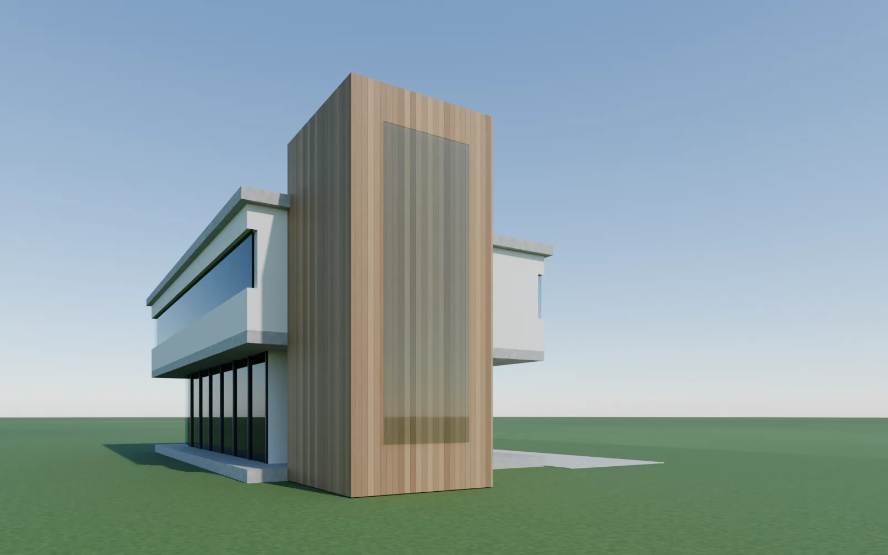

Villa von 1913
Umbau einer Villa von 1913 mit Anbau, 2026. Bestand, Entwurf, Innenräume und Grundrisse in Amphion, Abstimmung mit dem Bauherrn an den Bildern.


Vom Modell zum Bild
Das Rhino-Modell und das Bild, das Amphion daraus macht.


Für Architektinnen und Architekten im eigenen Büro
Du entwirfst. Amphion zeichnet.
Aus Bestandsplan, Skizze, Foto oder einem Satz wird ein echtes 3D-Modell mit Wänden, Decken und Fenstern. Amphion rendert auf deinem Computer und zeichnet Grundrisse, Schnitte und Ansichten.
Direkt für Mac · Apple Silicon · Mac · Intel · Windows 10 und 11
Am Handy? Link an den Computer schickenFür Mac und Windows · Projekte bleiben auf deinem Computer
Arbeitet mit dem, was du schon nutzt
Dein Modell geht als 3dm, IFC, DXF, STEP und PDF weiter. Gerendert wird mit Blender auf deinem Computer, gesteuert auch aus dem Terminal.

Ein KI-Chat beschreibt dir ein Haus in Worten und Bildern. Amphion baut es: ein Modell aus echten Bauteilen, Wände, Decken, Fenster und Treppen mit Maß und Material. Daraus zeichnet Amphion maßstäbliche Pläne, und dein Büro und deine Fachplaner arbeiten mit den Dateien weiter.
Text und Bilder. Keine Bauteile, kein Maßstab, keine Datei zum Weiterarbeiten.
Zwei fertige Projekte aus Amphion: ein Haus mit Garten von 1913 mit seinem Umbau, in rund 2 Stunden modelliert, und ein Hochhaus am Wasser mit der ganzen Stadt, in rund 5 Stunden. Du kannst sie drehen, schneiden, ein- und ausblenden und mit ihnen sprechen. Ändern und rendern machst du in der App.
Ziehen dreht · rechte Maustaste oder zwei Finger verschieben · Mausrad oder zwei Finger zoomen, bis hinunter auf die Straße

Amphion laden und öffnen. Mac: in den Ordner Programme ziehen, mit Rechtsklick öffnen. Windows: Installer starten, beim ersten Mal „Weitere Informationen“ und „Trotzdem ausführen“.
Beim ersten Start: Schlüssel eintragen, Code mit dem Handy scannen, Beispiel öffnen.
„Zwei Geschosse, Satteldach, Terrasse nach Süden.“ Amphion baut, du änderst, dann rendern und Pläne als PDF.
Amphion arbeitet auch direkt in Rhino, Blender und Revit. Dazu Amphion Modellbau: 3D-Druck und Laserschnitt aus Rhino.

Beschreib den Bau, Amphion baut Wände, Decken, Dächer und Treppen in Rhino 7 und 8 und rendert die Ansicht.

Import aus Rhino, OBJ, FBX, glTF, STL und IFC, Szene mit Sonne und Kamera in einem Klick, Render-Vorgaben.

Wände, Böden, Räume und Pläne aus einem Satz in Revit 2023 bis 2026, dazu Planstapel und PDF-Export.


Modellbau aus Rhino: wasserdichte STL und 3MF für den 3D-Druck, verschachtelte DXF und SVG für den Laser.
Umbau einer Villa von 1913 mit Anbau, 2026. Bestand, Entwurf, Innenräume und Grundrisse in Amphion, Abstimmung mit dem Bauherrn an den Bildern.
Das Rhino-Modell und das Bild, das Amphion daraus macht.
Hochhaus mit fünf öffentlichen Lichtungen, Wettbewerb 2026. Modell, Renderings, Pläne und Tafeln aus Amphion.


Wände, Decken, Stützen, Fenster, Treppen. Mit Maßen, Schichten und Mengen, nicht nur Flächen.
Du sagst oder schreibst, was du willst, in ganzen Sätzen. Amphion versteht dich in deiner Sprache.
Das Modell geht weiter in die gängigen CAD- und BIM-Programme oder zum Tragwerksplaner.
Blender Cycles läuft lokal, so oft du willst. Dazu KI-Renderings für Stimmung und Vegetation.
Grundrisse, Schnitte, Ansichten und Tafeln kommen fertig aus dem Modell.
Unterwegs im Browser bedienen. Oder aus Claude Code, Codex und Gemini CLI steuern.
Ja, für Entwurf, Bestand, Bauantrag und Werkpläne. Amphion zeichnet Grundrisse, Schnitte, Ansichten, Elektro- und Heizpläne und Details aus dem Modell, druckfertig. Von Hand zeichnest du mit Fang, Bemaßung und Schraffur wie im CAD. Für Fachplaner geht das Modell als IFC oder als DXF mit Layern hinaus.
Rechne mit deinen eigenen Zahlen. Amphion zeichnet aus dem Modell den ganzen Plansatz: Grundrisse, Elektro- und Heizplan, Schnitt, Ansicht und Detailblätter für Küche und Bäder, bemaßt und beschriftet. Für ein importiertes Einfamilienhaus haben wir 16 Blätter in rund zwei Minuten gemessen. Du sparst die Zeit, die du heute mit Zeichnen, Bemaßen und Beschriften verbringst. Sind das im Monat ein bis zwei Stunden, hat sich Amphion bezahlt. Und wenn nicht: Im ersten Monat bekommst du alles zurück.
Einen Mac mit macOS 14 oder neuer oder einen PC mit Windows 10 oder 11 (64 Bit), dazu Internet für die KI. Für Renderings installiert Amphion Blender von blender.org, ein Klick genügt.
Ja. Lade Amphion für Windows und starte den Installer. Weil Amphion neu ist, zeigt Windows beim ersten Start „Der Computer wurde durch Windows geschützt“. Klick auf „Weitere Informationen“ und dann auf „Trotzdem ausführen“. Danach startet Amphion normal.
Nein. Amphion ist bei Apple signiert und notarisiert: DMG öffnen, Amphion in den Ordner „Programme“ ziehen, starten. Windows warnt beim ersten Mal noch, siehe oben.
1. Blaue Meldung „Der Computer wurde durch Windows geschützt“: auf „Weitere Informationen“, dann „Trotzdem ausführen“ klicken. 2. Windows 11 mit Smart App Control blockiert Programme ohne Signatur ganz; unsere Signatur ist in Arbeit, bis dahin bitte melden. 3. Läuft noch eine ältere Amphion: im Task-Manager Amphion beenden und neu starten. 4. Beim ersten Start erscheint der Lizenzvertrag: „Zustimmen“ klicken. Hilft nichts, schreib an hello@amphion3d.com.
Auf deinem Computer. Projekte, Modelle und Renderings bleiben lokal. An die KI gehen nur die Texte deines Chats und, wenn du es willst, das Bild für ein KI-Rendering.
Nein. Die KI ist im Abo enthalten. Eigene Schlüssel anderer Anbieter gibt es nicht, du trägst nur deinen Amphion-Schlüssel ein.
Nein. Amphion stellt Kamera, Licht und Materialien selbst ein und startet Blender im Hintergrund. Du siehst nur das Bild.
Im griechischen Mythos baute Amphion die Mauern von Theben, ohne einen Stein zu heben. Er sang, und die Steine fügten sich von selbst. So arbeitest du mit Amphion: Du sprichst, und das Gebäude entsteht.
Per WhatsApp oder E-Mail. Wir lesen jede Nachricht selbst. WhatsApp +34 608 635 863, tassilodlts@gmail.com
Jederzeit mit einer Mail. Das Abo läuft bis zum Monatsende, danach ist Schluss. Deine Dateien bleiben bei dir.
Fragen, Wünsche oder ein Fehler im Programm: Schreib uns. Wir lesen jede Nachricht selbst.